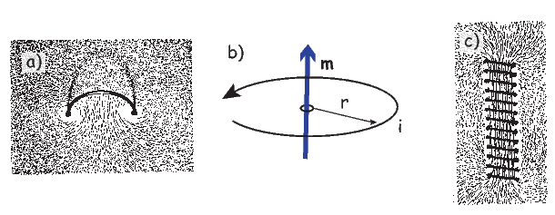
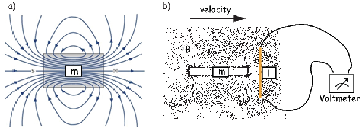
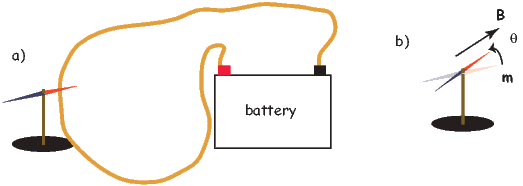

Figure 1.1: a) Distribution of iron filings on a flat sheet pierced by a wire
carrying a current i. [From Jiles, 1991.] b) Relationship of magnetic field to
current for straight wire.
BACKGROUND: Read chapters on magnetism from your favorite college physics book for review.
Paleomagnetism is the study of the magnetic properties of rocks. It is one of the most broadly applicable disciplines in geophysics, having uses in diverse fields such as geomagnetism, tectonics, paleoceanography, volcanology, paleontology, and sedimentology. Although the potential applications are varied, the fundamental techniques are remarkably uniform. Thus, a grounding in the basic tools of paleomagnetic data analysis can open doors to many of these applications. One of the underpinnings of paleomagnetic endeavors is the relationship between the magnetic properties of rocks and the Earth’s magnetic field.
In this chapter we will review the basic physical principles behind magnetism: what are magnetic fields, how are they produced and how are they measured? Although many find a discussion of scientific units boring, much confusion arose when paleomagnetists switched from “cgs” to the Système International (SI) units and mistakes abound in the literature. Therefore, we will explain both unit systems and look at how to convert successfully between them. There is a review of essential mathematical tricks in Appendix A to which the reader is referred for help.
Magnetic fields, like gravitational fields, cannot be seen or touched. We can feel the pull of the Earth’s gravitational field on ourselves and the objects around us, but we do not experience magnetic fields in such a direct way. We know of the existence of magnetic fields by their effect on objects such as magnetized pieces of metal, naturally magnetic rocks such as lodestone, or temporary magnets such as copper coils that carry an electrical current. If we place a magnetized needle on a cork in a bucket of water, it will slowly align itself with the local magnetic field. Turning on the current in a copper wire can make a nearby compass needle jump. Observations like these led to the development of the concept of magnetic fields.
Electric currents make magnetic fields, so we can define what is meant by a “magnetic field” in terms of the electric current that generates it. Figure 1.1a is a picture of what happens when we pierce a flat sheet with a wire carrying a current i. When iron filings are sprinkled on the sheet, the filings line up with the magnetic field produced by the current in the wire. A loop tangential to the field is shown in Figure 1.1b, which illustrates the right-hand rule (see inset to Figure 1.1b). If your right thumb points in the direction of (positive) current flow (the direction opposite to the flow of the electrons), your fingers will curl in the direction of the magnetic field.
The magnetic field H points at right angles to both the direction of current flow and to the radial vector r in Figure 1.1b. The magnitude of H (denoted H) is proportional to the strength of the current i. In the simple case illustrated in Figure 1.1b the magnitude of H is given by Ampère’s law:
where r is the length of the vector r. So, now we know the units of H: Am-1.
Ampère’s Law in its most general form is one of Maxwell’s equations of electromagnetism: in a steady electrical field, ∇× H = Jf, where Jf is the electric current density (see Section A.3.6 in the appendix for review of the ∇ operator). In words, the curl (or circulation) of the magnetic field is equal to the current density. The origin of the term “curl” for the cross product of the gradient operator with a vector field is suggested in Figure 1.1a in which the iron filings seem to curl around the wire.
An electrical current in a wire produces a magnetic field that “curls” around the wire. If we bend the wire into a loop with an area πr2 that carries a current i (Figure 1.2a), the current loop would create the magnetic field shown by pattern of the iron filings. This magnetic field is that same as the field that would be produced by a permanent magnet. We can quantify the strength of that hypothetical magnet in terms of a magnetic moment m (Figure 1.2b). The magnetic moment is created by a current i and also depends on the area of the current loop (the bigger the loop, the bigger the moment). Therefore, the magnitude of the moment can by quantified by m = iπr2. The moment created by a set of loops (as shown in Figure 1.2c) would be the sum of the n individual loops, i.e.:
 | (1.1) |
So, now we know the units of m: Am2. In nature, magnetic moments are carried by magnetic minerals the most common of which are magnetite and hematite (see Chapter 6 for details).

The magnetic field is a vector field because at any point it has both direction and magnitude. Consider the field of the bar magnet in Figure 1.3a. The direction of the field at any point is given by the arrows while the strength depends on how close the field lines are to one another. The magnetic field lines represent magnetic flux. The density of flux lines is one measure of the strength of the magnetic field: the magnetic induction B.

Just as the motion of electrically charged particles in a wire (a current) create a magnetic field (Ampère’s Law), the motion of a magnetic field creates electric currents in nearby wires. The stronger the magnetic field, the stronger the current in the wire. We can therefore measure the strength of the magnetic induction (the density of magnetic flux lines) by moving a conductive wire through the magnetic field (Figure 1.3b).
Magnetic induction can be thought of as something that creates a potential difference with voltage V in a conductor of length l when the conductor moves relative to the magnetic induction B with velocity v (see Figure 1.3b): V = vlB. From this we can derive the units of magnetic induction: the tesla (T). One tesla is the magnetic induction that generates a potential of one volt in a conductor of length one meter when moving at a rate of one meter per second. So now we know the units of B: V ⋅ s ⋅ m-2 = T.
Another way of looking at B is that if magnetic induction is the density of magnetic flux lines, it must be the flux Φ per unit area. So an increment of flux dΦ is the field magnitude B times the increment of area dA. The area here is the length of the wire l times its displacement ds in time dt. The instantaneous velocity is dv = ds∕dt so dΦ = BdA and the rate of change of flux is:
|
| (1.2) |
Equation 1.2 is known as Faraday’s law and in its most general form is the fourth of Maxwell’s equations. We see from Equation 1.2 that the units of magnetic flux must be a volt-second which is a unit in its own right: the weber (Wb). The weber is defined as the amount of magnetic flux which, when passed through a one-turn coil of a conductor carrying a current of one ampere, produces an electric potential of one volt. This definition suggests a means to measure the strength of magnetic induction and is the basis of the “fluxgate” magnetometer.
A magnetic moment m in the presence of a magnetic field B has a magnetostatic energy (Em) associated with it. This energy tends to align compass needles with the magnetic field (see Figure 1.4). Em is given by -m ⋅ B or -mB cosθ where m and B are the magnitudes of m and B, respectively (see Section A.3.4 in the appendix for review of vector multiplication). Magnetic energy has units of joules and is at a minimum when m is aligned with B.

Magnetization M is a normalized moment (Am2). We will use the symbol M for volume normalization (units of Am-1) or Ω for mass normalization (units of Am2kg-1). Volume normalized magnetization therefore has the same units as H, implying that there is a current somewhere, even in permanent magnets. In the classical view (pre-quantum mechanics), sub-atomic charges such as protons and electrons can be thought of as tracing out tiny circuits and behaving as tiny magnetic moments. They respond to external magnetic fields and give rise to an induced magnetization. The relationship between the magnetization induced in a material MI and the external field H is defined as:
 | (1.3) |
The parameter χb is known as the bulk magnetic susceptibility of the material; it can be a complicated function of orientation, temperature, state of stress, time scale of observation and applied field, but is often treated as a scalar. Because M and H have the same units, χb is dimensionless. In practice, the magnetic response of a substance to an applied field can be normalized by volume (as in Equation 1.3) or by mass or not normalized at all. We will use the symbol κ for mass normalized susceptibility and K for the raw measurements (see Table 1.1) when necessary.
Certain materials can produce magnetic fields in the absence of external magnetic fields (i.e., they are permanent magnets). As we shall see in later chapters, these so-called “spontaneous” magnetic moments are also the result of spins of electrons which, in some crystals, act in a coordinated fashion, thereby producing a net magnetic field. The resulting spontaneous magnetization can be fixed by various mechanisms and can preserve records of ancient magnetic fields. This remanent magnetization forms the basis of the field of paleomagnetism and will be discussed at length in subsequent chapters.
B and H are closely related and in paleomagnetic practice, both B and H are referred to as the “magnetic field”. Strictly speaking, B is the induction and H is the field, but the distinction is often blurred. The relationship between B and H is given by:
 | (1.4) |
where μ is a physical constant known as the permeability. In a vacuum, this is the permeability of free space, μo. In the SI system, μ has dimensions of henries per meter and μo is
4π × 10-7H ⋅ m-1. In most cases of paleomagnetic interest, we are outside the magnetized body so M = 0 and B = μoH.
So far, we have derived magnetic units in terms of the Système International (SI). In practice, you will notice that people frequently use what are known as cgs units, based on centimeters, grams and seconds. You may wonder why any fuss would be made over using meters as opposed to centimeters because the conversion is trivial. With magnetic units, however, the conversion is far from trivial and has been the source of confusion and many errors. So, in the interest of clearing things up, we will briefly outline the cgs approach to magnetic units.
The derivation of magnetic units in cgs is entirely different from SI. The approach we will take here follows that of Cullity (1972). We start with the concept of a magnetic pole with strength p instead of with current loops as we did for SI units. We will consider the force between two poles p1,p2 (see Figure 1.5) Coulomb’s law. This states that the force between two charges (q1,q2) is:
|
| (1.5) |
where r is the distance between the two charges. In cgs units, the proportionality constant k is simply unity, whereas in SI units it is 1 __ 4πϵ0 where ϵ0 = 107 _ 4πc2 and c is the speed of light in a vacuum (hence ϵ0 = 8.859 ⋅ 10-12 AsV-1m-1). [You can see why many people really prefer cgs but we are not allowed to publish in cgs in most of geophysical journals so we just must grin and bear it!]
For magnetic units, we use pole strength p1,p2 in units of electrostatic units or esu, so Equation 1.5 becomes
Force in cgs is in units of dynes (dyn), so

A magnetic pole, as an isolated electric charge, would create a magnetic induction μoH in the space around it. One unit of field strength (defined as one oersted or Oe) is the unit of field strength that exerts a force of one dyne on a unit of pole strength. The related induction (μoH) has units of gauss or G.
The relationship between force, pole and magnetic field is written as:

Returning to the lines of force idea developed for magnetic fields earlier, let us define the oersted to be the magnetic field which would produce an induction with one unit of induction per square centimeter. Imagine a sphere with a radius r surrounding the magnetic monopole. The surface area of such a sphere is 4πr2. When the sphere is a unit sphere (r = 1) and the field strength at the surface is 1 Oe, then there must be a magnetic flux of 4π units of induction passing through it.
You will have noticed the use of the permeability of free space μo in the above treatment – a parameter missing in many books and articles using the cgs units. The reason for this is that μo is unity in cgs units and simply converts oersteds (H) to gauss (B = μoH). Therefore in cgs units, B and H are used interchangeably. We inserted it in this derivation to remind us that there IS a difference and that the difference becomes very important when we convert to SI because μo is not unity, but 4π x 10-7! For conversion between commonly used cgs and SI paramters, please refer to Table 1.1.
Proceeding to the notion of magnetic moment, from a cgs point of view, we start with a magnet of length l with two poles of strength p at each end. Placing the magnet in a field μoH, we find that it experiences a torque Γ proportional to p,l and H such that
|
| (1.6) |
Recalling our earlier discussion of magnetic moment, you will realize that pl is simply the magnetic moment m. This line of reasoning also makes clear why it is called a “moment”. The units of torque are energy, which are ergs in cgs, so the units of magnetic moment are technically erg per gauss. But because of the “silent” μo in cgs, magnetic moment is most often defined as erg per oersted We therefore follow convention and define the “electromagnetic unit” (emu) as being one erg ⋅ oe-1. [Some use emu to refer to the magnetization (volume normalized moment, see above), but this is incorrect and a source of a lot of confusion.]
| Parameter | SI unit | cgs unit | Conversion | |
| Magnetic moment (m) | Am2 | emu | 1 A m2 = 103 emu | |
| Magnetization | ||||
| by volume (M) | Am-1 | emu cm-3 | 1 Am-1 = 10-3 emu cm-3 | |
| by mass (Ω) | Am2kg-1 | emu gm-1 | 1 Am2kg-1 = 1 emu gm-1 | |
| Magnetic Field (H) | Am-1 | Oersted (oe) | 1 Am-1 = 4π x 10-3 oe | |
| Magnetic Induction (B) | T | Gauss (G) | 1 T = 104 G | |
| Permeability | ||||
| of free space (μo) | Hm-1 | 1 | 4π x 10-7 Hm-1 = 1 | |
| Susceptibility | ||||
| total (K:mH) | m3 | emu oe-1 | 1 m3 = 106 4π emu oe-1 | |
| by volume ( χ: M H) | - | emu cm-3 oe-1 | 1 S.I. = 1 _ 4π emu cm-3 oe-1 | |
| by mass (κ:mm ⋅ 1 _ H) | m3kg -1 | emu g-1 oe-1 | 1 m3kg-1 = 103 4π emu g-1 oe-1 | |
1 H = kg m2A-2s-2, 1 emu = 1 G cm3, B = μoH (in vacuum), 1 T = kg A-1 s-2
An isolated electrical charge produces an electrical field that begins at the source (the charge) and spread (diverge) outward (see Figure 1.6a). Because there is no return flux to an oppositely charged “sink”, there is a net flux out of the dashed box shown in the figure. The divergence of the electrical field is defined as ∇⋅ E which quantifies the net flux (see Appendix A.3.6 for more). In the case of the field around an electric charge, the divergence is non-zero.
Magnetic fields are different from electrical fields in that there is no equivalent to an isolated electrical charge; there are only pairs of “opposite charges” – magnetic dipoles. Therefore, any line of flux starting at one magnetic pole, returns to its sister pole and there is no net flux out of the box shown in Figure 1.6b; the magnetic field has no divergence (Figure 1.6b). This property of magnetic fields is another of Maxwell’s equations: ∇⋅ B = 0.

In the special case away from electric currents and magnetic sources (so B = μoH), the magnetic field can be written as the gradient of a scalar field that is known as the magnetic potential, ψm, i.e.,

The presence of a magnetic moment m creates a magnetic field which is the gradient of some scalar field. To gain a better intuitive feel about the relationship between scalar fields and their gradient vector fields, see Appendix A.3.6. Because the divergence of the magnetic field is zero, by definition, the divergence of the gradient of the scalar field is also zero, or ∇2ψm = 0. The operator ∇2 is called the Laplacian and ∇2ψm = 0 is Laplace’s equation. This will be the starting point for spherical harmonic analysis of the geomagnetic field discussed briefly in Chapter 2.
The curl of the magnetic field (∇×H) depends on the current density and is not always zero and magnetic fields cannot generally be represented as the gradient of a scalar field. Laplace’s equation is only valid outside the magnetic sources and away from currents.
So what is this magnetic potential and how does it relate to the magnetic moments that give rise to the magnetic field? Whatever it is, it has to satisfy Laplace’s equation, so we turn to solutions of Laplace’s equation for help. One solution is to define the magnetic potential ψm as a function of the vector r with radial distance r and the angle θ from the moment. Given a dipole moment m, a solution to Laplace’s equation is:
|
| (1.7) |
You can verify this by making sure that∇2ψm = 0.
The radial (Hr) and tangential (Hθ) components of H at P (Figure 1.10) then would be:

 | (1.8) |
respectively.

Measurement and description of the geomagnetic field and its spatial and temporal variations constitute one of the oldest geophysical disciplines. However, our ability to describe the field far exceeds our understanding of its origin. All plausible theories involve generation of the geomagnetic field within the fluid outer core of the Earth by some form of magnetohydrodynamic dynamo. Attempts to solve the full mathematical complexities of magnetohydrodynamics succeeded only in 1995 (Glatzmaier and Roberts, 1995).
Quantitative treatment of magnetohydrodynamics is (mercifully) beyond the scope of this book, but we can provide a qualitative explanation. The first step is to gain some appreciation for what is meant by a self-exciting dynamo. Maxwell’s equations tell us that electric and changing magnetic fields are closely linked and can affect each other. Moving an electrical conductor through a magnetic field will cause electrons to flow, generating an electrical current. This is the principle of electric motors. A simple electromechanical disk-dynamo model such as that shown in Figure 1.8 contains the essential elements of a self-exciting dynamo. The model is constructed with a copper disk rotating attached to an electrically conducting (e.g., brass) axle. An initial magnetic induction field, B, is perpendicular to the copper disk in an upward direction. Electrons in the copper disk experience a push from the magnetic field known as the Lorentz force, FL, when they pass through the field.

The Lorentz force is given by:
|
| (1.9) |
where q is the electrical charge of the electrons, and v is their velocity. The Lorentz force on the electrons is directed toward the axle of the disk and the resulting electrical current flow is toward the outside of the disk (Figure 1.8).
Brush connectors are used to tap the electrical current from the disk, and the current passes through a coil under the disk. This coil is cleverly wound so that the electrical current produces a magnetic induction field in the same direction as the original field. The electrical circuit is a positive feedback system that reinforces the original magnetic induction field. The entire disk-dynamo model is a self-exciting dynamo. As long as the disk keeps rotating, the electrical current will flow, and the magnetic field will be sustained even if the original field disappears.
With this simple model we encounter the essential elements of any self-exciting dynamo:
More complicated setups using two disks whose fields interact with one another generate chaotic magnetic behavior that can switch polarities even if the mechanical motion remains steady. Certainly no one proposes that systems of disks and feedback coils exist in the Earth’s core. But interaction between the magnetic field and the electrically conducting iron-nickel alloy in the outer core can produce a positive feedback and allow the Earth’s core to operate as a self-exciting magnetohydrodynamic dynamo. For reasonable electrical conductivities, fluid viscosity, and plausible convective fluid motions in the Earth’s outer core, the fluid motions can regenerate the magnetic field that is lost through electrical resistivity. There is a balance between fluid motions regenerating the magnetic field and loss of magnetic field because of electrical resistivity. The dominant portion of the geomagnetic field detectable at the surface is essentially dipolar with the axis of the dipole nearly parallel to the rotational axis of the Earth. Rotation of the Earth must therefore be a controlling factor on the time-averaged fluid motions in the outer core. It should also be pointed out that the magnetohydrodynamic dynamo can operate in either polarity of the dipole. Thus, there is no contradiction between the observation of reversals of the geomagnetic dipole and magnetohydrodynamic generation of the geomagnetic field. However, understanding the special interactions of fluid motions and magnetic field that produce geomagnetic reversals is a major challenge.
As wise economists have long observed, there is no free lunch. The geomagnetic field is no exception. Because of ohmic dissipation of energy, there is a requirement for energy input to drive the magnetohydrodynamic fluid motions and thereby sustain the geomagnetic field. Estimates of the power (energy per unit time) required to generate the geomagnetic field are about 1013 W (roughly the output of 104 nuclear power plants). This is about one fourth of the total geothermal flux, so the energy involved in generation of the geomagnetic field is a substantial part of the Earth’s heat budget.
Many sources of this energy have been proposed, and ideas on this topic have changed over the years. The energy sources that are currently thought to be most reasonable are a combination of cooling of the Earth’s core with attendant freezing of the outer core and growth of the solid inner core. The inner core is pure iron, while the liquid outer core is some 15% nickel (and probably has trace amounts of other elements as well). The freezing of the inner core therefore generates a bouyancy force as the remaining liquid becomes more enriched in the lighter elements. These energy sources are sufficient to power the fluid motions of the outer core required to generate the geomagnetic field.
SUPPLEMENTAL READINGS: Jiles (1991), Chapter 1; Cullity (1972), Chapter 1.
Problem 1
In axisymmetric spherical coordinates, ∇ (the gradient operator) is given by
We also know that

and that ψm is a scalar function of position:

Find the radial and tangential components of H if m is 80 ZAm2, [remember that “Z” stands for Zeta which stands for 1021], r is 6 x 106 m and θ is 45o. What are these field values in terms of B (teslas)?
Write your answers in a markdown cell in a jupyter notebook using latex syntax.
Problem 2
a) In your Jupyter notebook, write Python functions to convert induction, moment and magnetic field quantities in cgs units to SI units. Use the conversion factors in Table 1.1. Use your function to convert the following from cgs to SI:
i) B = 3.5 x105 G
ii) m = 2.78 x 10-20 G cm3
iii) H = 128 oe
b) In a new code block, modify your function to allow conversion from cgs => SI or SI => cgs. Rerun it to convert your answers from a) back to cgs.
HINTS: Call the functions with the values of B, m and H and have the function return the converted values. In the modified functions, you can specify whether the conversion is from cgs or SI.

Problem 3
Figure 1.9 shows a meridional cross section through the Earth in the plane of a magnetic dipole source m. At the location directly above the dipole, the field from the dipole is directed vertically downward and has intensity 10 μT. The dipole source is placed at 3480 km from the center of the Earth. Assume a mean Earth radius of 6370 km. Adapt the geometry of Figure 1.10 and the equations describing the magnetic field of a dipole to the model dipole in Figure 1.9.
a) Calculate the magnetic dipole moment of the model dipole. Remember to keep track of your units!
b) Compare this field to the total field produced by a centered axial magnetic dipole moment (i.e., one that is pointing straight up and is in the center of the circles) equivalent to that of the present geomagnetic field (m ~ 80 ZAm2; Z=1021). Assume a latitude for the point of observation of 60∘. [HINT: the angle θ in Equation 1.10 is the co-latitude, not the latitude.]
 | (1.10) |

Problem 4
Knowing that B = μoH, work out the fundamental units of μo in SI units. Prepare your answer in a markdown cell in your Jupyter notebook.